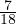

Due: Tuesday, March 14, 2023, by end of day.
Penalty for late homeworks: 10% for each day or part of a day.
In the examples below, x is required to be a nonnegative vector in ℝ3 and y is constrained to be a binary vector with three components. A set of constraints that must be satisfied by x and y is given, and a point that satisfies these constraints is also given. Find a valid flow cover inequality that cuts off this point.
Constraints:
Point:
Constraints:
Point:
Let P = {x ∈ ℝn : Ax ≤ b} and S = P ∩ Bn. Let S0 := {x ∈ S : x1 = 0}. Assume gTx ≤ h is a valid constraint for S0, and g1 = 0. Let μ be the optimal value of the linear program max{gTx : x ∈ P,x1 = 1}. Prove the following inequality is valid for S:
Let S be the set of binary variables x ∈ B4 satisfying
| (1) |
When x2 = 1, we have the valid constraint
| (2) |
Lift the inequality to give a valid inequality for S. (Hint: consider a change of variables z2 := 1 - x2. Make sure you convert your constraint back to the x variables.)
Let
and S = P ∩ B4. The point = (,0,,0) ∈ P, but it is not in the convex hull of S. Exploit the disjunction x1 + x3 ≤ 1 or x1 + x3 ≥ 2 to find a valid constraint for S that is violated by .
Let S denote the set of feasible solutions to a clustering problem with n items, as discussed in Lecture 12D. Show that the triangle inequality
| (3) |
defines a facet of conv(S) for 1 ≤ i < j < k ≤ n.
Choose a seed and solve the clustering problem in
using a cutting plane algorithm, solving LP relaxations and adding violated triangle inequalities of the forms
Note: The AMPL file is designed to create a clustering problem with certain properties. If you use a different software package to solve this question, then you need to make sure you generate a clustering problem of the same form as that described in the AMPL file.
| John Mitchell |
| Amos Eaton 325 |
| x6915. |
| mitchj at rpi dot edu |
| Office hours: Tuesday 12-4pm and Friday 12-2pm on webex: |
| . https://rensselaer.webex.com/meet/mitchj. |